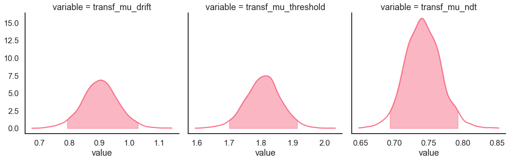
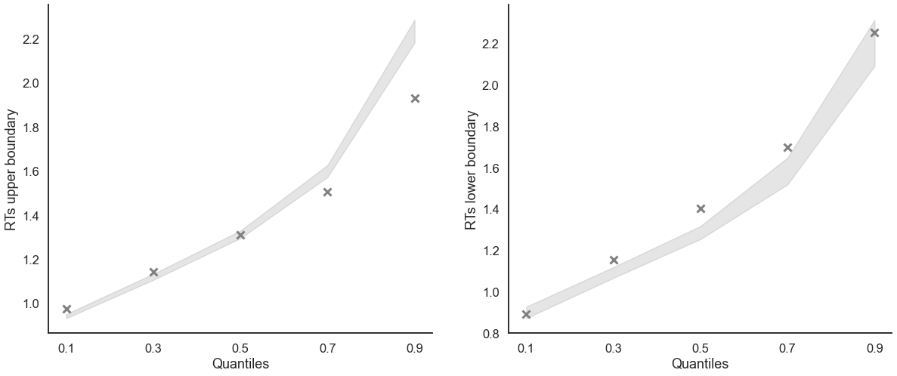

Fit the DDM on hierarchical data¶
[1]:
import rlssm
import pandas as pd
import os
Import the data¶
[2]:
data = rlssm.load_example_dataset(hierarchical_levels = 2)
data.head()
[2]:
| participant | block_label | trial_block | f_cor | f_inc | cor_option | inc_option | times_seen | rt | accuracy | |
|---|---|---|---|---|---|---|---|---|---|---|
| 0 | 1 | 1 | 1 | 43 | 39 | 2 | 1 | 1 | 1.244082 | 0 |
| 1 | 1 | 1 | 2 | 60 | 50 | 4 | 3 | 1 | 1.101821 | 1 |
| 2 | 1 | 1 | 3 | 44 | 36 | 4 | 2 | 2 | 1.029923 | 0 |
| 3 | 1 | 1 | 4 | 55 | 55 | 4 | 3 | 2 | 1.368007 | 0 |
| 4 | 1 | 1 | 5 | 52 | 49 | 4 | 3 | 3 | 1.039329 | 1 |
Fit¶
[4]:
# sampling parameters
n_iter = 3000
n_warmup = 1000
n_chains = 2
n_thin = 1
# bayesian model, change default priors:
drift_priors = {'mu_mu':1, 'sd_mu':1, 'mu_sd':0, 'sd_sd':1}
threshold_priors = {'mu_mu':-1, 'sd_mu':.5, 'mu_sd':0, 'sd_sd':1}
[5]:
model_fit = model.fit(
data,
drift_priors=drift_priors,
threshold_priors=threshold_priors,
warmup = n_warmup,
iter = n_iter,
chains = n_chains,
verbose = False)
Fitting the model using the priors:
drift_priors {'mu_mu': 1, 'sd_mu': 1, 'mu_sd': 0, 'sd_sd': 1}
threshold_priors {'mu_mu': -1, 'sd_mu': 0.5, 'mu_sd': 0, 'sd_sd': 1}
ndt_priors {'mu_mu': 1, 'sd_mu': 1, 'mu_sd': 0, 'sd_sd': 1}
WARNING:pystan:Maximum (flat) parameter count (1000) exceeded: skipping diagnostic tests for n_eff and Rhat.
To run all diagnostics call pystan.check_hmc_diagnostics(fit)
Checks MCMC diagnostics:
n_eff / iter looks reasonable for all parameters
0.0 of 4000 iterations ended with a divergence (0.0%)
0 of 4000 iterations saturated the maximum tree depth of 10 (0.0%)
E-BFMI indicated no pathological behavior
get Rhat¶
[6]:
model_fit.rhat.describe()
[6]:
| rhat | |
|---|---|
| count | 87.000000 |
| mean | 1.002063 |
| std | 0.001658 |
| min | 0.999537 |
| 25% | 1.000544 |
| 50% | 1.001811 |
| 75% | 1.003711 |
| max | 1.005368 |
calculate wAIC¶
[7]:
model_fit.waic
[7]:
{'lppd': -5411.232334273516,
'p_waic': 100.49218768903286,
'waic': 11023.449043925099,
'waic_se': 176.56475211992282}
Posteriors¶
[8]:
model_fit.samples.describe()
[8]:
| chain | draw | transf_mu_drift | transf_mu_threshold | transf_mu_ndt | drift_sbj[1] | drift_sbj[2] | drift_sbj[3] | drift_sbj[4] | drift_sbj[5] | ... | ndt_sbj[18] | ndt_sbj[19] | ndt_sbj[20] | ndt_sbj[21] | ndt_sbj[22] | ndt_sbj[23] | ndt_sbj[24] | ndt_sbj[25] | ndt_sbj[26] | ndt_sbj[27] | |
|---|---|---|---|---|---|---|---|---|---|---|---|---|---|---|---|---|---|---|---|---|---|
| count | 4000.000000 | 4000.000000 | 4000.000000 | 4000.000000 | 4000.000000 | 4000.000000 | 4000.000000 | 4000.000000 | 4000.000000 | 4000.000000 | ... | 4000.000000 | 4000.000000 | 4000.000000 | 4000.000000 | 4000.000000 | 4000.000000 | 4000.000000 | 4000.000000 | 4000.000000 | 4000.000000 |
| mean | 0.500000 | 999.500000 | 0.902761 | 1.807539 | 0.741604 | 1.130521 | 0.796869 | 0.987316 | 0.722244 | 0.788625 | ... | 0.730397 | 0.387217 | 0.917420 | 0.746415 | 0.742279 | 0.582877 | 0.738693 | 0.853545 | 0.465463 | 0.863420 |
| std | 0.500063 | 577.422379 | 0.059822 | 0.054908 | 0.026017 | 0.092552 | 0.086190 | 0.091410 | 0.070307 | 0.080458 | ... | 0.010526 | 0.013373 | 0.012058 | 0.016956 | 0.012844 | 0.015244 | 0.011544 | 0.009388 | 0.005858 | 0.013867 |
| min | 0.000000 | 0.000000 | 0.674924 | 1.595346 | 0.647802 | 0.819075 | 0.466966 | 0.655683 | 0.454312 | 0.505320 | ... | 0.676340 | 0.326232 | 0.861828 | 0.663290 | 0.685504 | 0.512557 | 0.690101 | 0.785180 | 0.433751 | 0.801070 |
| 25% | 0.000000 | 499.750000 | 0.863994 | 1.772357 | 0.723955 | 1.067871 | 0.738409 | 0.926912 | 0.674731 | 0.733996 | ... | 0.723725 | 0.378700 | 0.909887 | 0.735585 | 0.734626 | 0.573140 | 0.731390 | 0.847871 | 0.461699 | 0.854582 |
| 50% | 0.500000 | 999.500000 | 0.903058 | 1.808784 | 0.740936 | 1.130679 | 0.795897 | 0.986899 | 0.722107 | 0.788834 | ... | 0.731266 | 0.388043 | 0.918484 | 0.747791 | 0.743200 | 0.583825 | 0.739453 | 0.854248 | 0.465894 | 0.864309 |
| 75% | 1.000000 | 1499.250000 | 0.940805 | 1.842290 | 0.758722 | 1.192259 | 0.855532 | 1.047859 | 0.769020 | 0.842797 | ... | 0.738054 | 0.396858 | 0.925692 | 0.758399 | 0.751337 | 0.593646 | 0.746683 | 0.860238 | 0.469833 | 0.873388 |
| max | 1.000000 | 1999.000000 | 1.141893 | 2.033432 | 0.852444 | 1.422928 | 1.123298 | 1.392205 | 0.987737 | 1.074931 | ... | 0.757969 | 0.422315 | 0.950412 | 0.794461 | 0.777875 | 0.625252 | 0.774845 | 0.880258 | 0.479346 | 0.901650 |
8 rows × 86 columns
[9]:
import seaborn as sns
sns.set(context = "talk",
style = "white",
palette = "husl",
rc={'figure.figsize':(15, 8)})
[10]:
model_fit.plot_posteriors(height=5, show_intervals='HDI');

Posterior predictives¶
Ungrouped¶
[11]:
pp_summary = model_fit.get_posterior_predictives_summary(n_posterior_predictives=100)
pp_summary
[11]:
| mean_accuracy | mean_rt | skewness | quant_10_rt_low | quant_30_rt_low | quant_50_rt_low | quant_70_rt_low | quant_90_rt_low | quant_10_rt_up | quant_30_rt_up | quant_50_rt_up | quant_70_rt_up | quant_90_rt_up | |
|---|---|---|---|---|---|---|---|---|---|---|---|---|---|
| sample | |||||||||||||
| 1 | 0.833075 | 1.465869 | 1.924414 | 0.883730 | 1.093301 | 1.272597 | 1.568961 | 2.198967 | 0.941062 | 1.119104 | 1.321842 | 1.611800 | 2.195939 |
| 2 | 0.836170 | 1.463162 | 2.103788 | 0.892418 | 1.078721 | 1.299354 | 1.572111 | 2.172324 | 0.931466 | 1.112196 | 1.298555 | 1.591849 | 2.215945 |
| 3 | 0.846999 | 1.483644 | 2.208010 | 0.905064 | 1.090908 | 1.315067 | 1.576960 | 2.248927 | 0.940345 | 1.116395 | 1.311158 | 1.604061 | 2.271693 |
| 4 | 0.814047 | 1.484810 | 2.045138 | 0.923073 | 1.095670 | 1.295465 | 1.581610 | 2.274091 | 0.947493 | 1.129157 | 1.314156 | 1.610896 | 2.241961 |
| 5 | 0.837407 | 1.465835 | 2.270638 | 0.922109 | 1.093109 | 1.314665 | 1.643438 | 2.282154 | 0.937676 | 1.112792 | 1.289724 | 1.571149 | 2.203733 |
| ... | ... | ... | ... | ... | ... | ... | ... | ... | ... | ... | ... | ... | ... |
| 96 | 0.829517 | 1.469527 | 2.031207 | 0.921734 | 1.093067 | 1.290120 | 1.542060 | 2.201835 | 0.940105 | 1.114216 | 1.305271 | 1.599589 | 2.227620 |
| 97 | 0.834004 | 1.482221 | 2.272835 | 0.884389 | 1.096907 | 1.286055 | 1.565813 | 2.301758 | 0.940277 | 1.119118 | 1.309424 | 1.595480 | 2.277529 |
| 98 | 0.825959 | 1.478508 | 2.217464 | 0.900590 | 1.089122 | 1.268247 | 1.549817 | 2.153399 | 0.941824 | 1.118637 | 1.309469 | 1.600631 | 2.277239 |
| 99 | 0.828899 | 1.468675 | 2.238373 | 0.900192 | 1.104152 | 1.303109 | 1.600759 | 2.304936 | 0.932834 | 1.107752 | 1.296001 | 1.570841 | 2.213527 |
| 100 | 0.827042 | 1.463481 | 2.305245 | 0.882360 | 1.074106 | 1.280296 | 1.583718 | 2.223310 | 0.945467 | 1.117998 | 1.303640 | 1.580593 | 2.195555 |
100 rows × 13 columns
[12]:
model_fit.plot_mean_posterior_predictives(n_posterior_predictives=100, figsize=(20,8), show_intervals='HDI');

[13]:
model_fit.plot_quantiles_posterior_predictives(n_posterior_predictives=100, kind='shades');

Grouped¶
[14]:
import numpy as np
[15]:
# Define new grouping variables, in this case, for the different choice pairs, but any grouping var can do
data['choice_pair'] = 'AB'
data.loc[(data.cor_option == 3) & (data.inc_option == 1), 'choice_pair'] = 'AC'
data.loc[(data.cor_option == 4) & (data.inc_option == 2), 'choice_pair'] = 'BD'
data.loc[(data.cor_option == 4) & (data.inc_option == 3), 'choice_pair'] = 'CD'
data['block_bins'] = pd.cut(data.trial_block, 8, labels=np.arange(1, 9))
[16]:
model_fit.get_grouped_posterior_predictives_summary(
grouping_vars=['block_label', 'choice_pair'],
quantiles=[.3, .5, .7],
n_posterior_predictives=100)
[16]:
| mean_accuracy | mean_rt | skewness | quant_30_rt_low | quant_30_rt_up | quant_50_rt_low | quant_50_rt_up | quant_70_rt_low | quant_70_rt_up | |||
|---|---|---|---|---|---|---|---|---|---|---|---|
| block_label | choice_pair | sample | |||||||||
| 1 | AB | 1 | 0.836127 | 1.424913 | 1.829896 | 1.132202 | 1.090361 | 1.302380 | 1.287831 | 1.640282 | 1.555307 |
| 2 | 0.810056 | 1.489926 | 3.021606 | 1.085730 | 1.115178 | 1.290275 | 1.313489 | 1.660278 | 1.574471 | ||
| 3 | 0.834264 | 1.522572 | 1.795817 | 1.114961 | 1.123546 | 1.348158 | 1.338346 | 1.773007 | 1.607617 | ||
| 4 | 0.826816 | 1.504265 | 2.000594 | 1.127252 | 1.137665 | 1.289395 | 1.347707 | 1.620425 | 1.639692 | ||
| 5 | 0.856611 | 1.455028 | 2.136628 | 1.016709 | 1.092805 | 1.266724 | 1.297497 | 1.535460 | 1.598402 | ||
| ... | ... | ... | ... | ... | ... | ... | ... | ... | ... | ... | ... |
| 3 | CD | 96 | 0.822222 | 1.508209 | 1.729570 | 1.070761 | 1.113506 | 1.194467 | 1.393401 | 1.542280 | 1.692783 |
| 97 | 0.829630 | 1.469977 | 1.739914 | 1.114338 | 1.112565 | 1.333333 | 1.292743 | 1.630972 | 1.608350 | ||
| 98 | 0.838889 | 1.519894 | 1.752790 | 1.191110 | 1.155950 | 1.393306 | 1.349036 | 1.715621 | 1.666124 | ||
| 99 | 0.844444 | 1.462611 | 1.526917 | 1.011587 | 1.141000 | 1.217973 | 1.333668 | 1.496050 | 1.607953 | ||
| 100 | 0.838889 | 1.442204 | 2.094030 | 1.070715 | 1.115111 | 1.201510 | 1.322007 | 1.432134 | 1.583041 |
1200 rows × 9 columns
[ ]:
model_fit.get_grouped_posterior_predictives_summary(
grouping_vars=['block_bins'],
quantiles=[.3, .5, .7],
n_posterior_predictives=100)
[ ]:
model_fit.plot_mean_grouped_posterior_predictives(grouping_vars=['block_bins'],
n_posterior_predictives=100,
figsize=(20,8));
[ ]:
model_fit.plot_quantiles_grouped_posterior_predictives(n_posterior_predictives=100,
grouping_var='choice_pair',
kind='shades',
quantiles=[.1, .3, .5, .7, .9]);